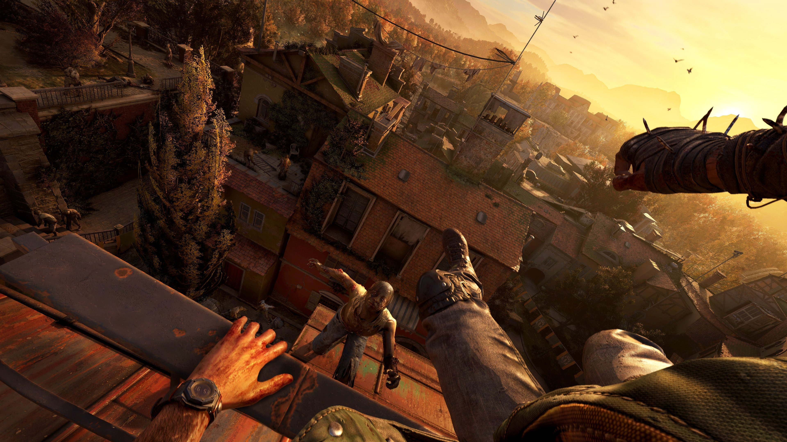

¡Prepárate para lo que viene!
DOOM: The Dark Ages

Es el único shooter que ha conquistado el GOTY de MeriStation y ahora está de vuelta. La nueva entrega de DOOM ha sido el pelotazo con el que ha abierto el Xbox Games Showcase 2024 y menuda forma de empezar. El juego, como siempre de iD Software, lleva cuatro años en desarrollo (desde que saliera el también magnífico DOOM Eternal) y nos trasladará a la Edad Media, donde Doomguy también se las veía y deseaba contra los demonios, pero “mucho antes de ser un héroe”.
Llamado DOOM: The Dark Ages, esta entrega parece mantener todas las señas de identidad de la saga, o lo que es lo mismo, se antoja un chute de adrenalina directo al corazón y una sucesión interminable de estímulos y tiroteos cuyo diseño está a años luz del resto del género. Todavía sin fecha, llegará en algún momento de 2025 a Xbox y PC, pero ojo porque también saldrá en PlayStation 5.
- Fecha de lanzamiento: 2025
- Plataformas: Xbox, PC, PlayStation 5
Dying Light: The Beast
Una de las sorpresas de la Gamescom 2024, anticipada hace apenas unas horas, es el regreso de una de las sagas de zombis que más adeptos ha ganado: Dying Light. Aunque el equipo polaco de Techland sorprendió a todos hace relativamente poco con su segunda entrega, estrenada hace apenas dos años, el estudio tenía una deuda con nosotros: expandir esta secuela con nuevo contenido. Sin embargo, en lugar de hacerlo con un DLC, han decidido crear un juego independiente, completo, con el regreso de Kyle Crane, y completamente gratis si tienes la Ultimate Edition de Dying Light 2. Así es Dying Light: The Beast.
Esta entrega nos vuelve a presentar a Crane, el protagonista del primer título, pero ahora 10 años después de su aventura original. Interesantemente, este título comenzó su desarrollo como un DLC para Dying Light 2, pero el proyecto aumentó a un nivel que Techland, los desarrolladores, optaron por crear algo completamente nuevo.
- Fecha de lanzamiento: 2024
- Plataformas: Xbox, PC, PlayStation 5
Subnautica 2
El año que viene nos tocará enfundarnos, de nuevo, el traje de buzo. Sí, ya sabemos que hay un nuevo juego de Subnautica en desarrollo, pero ojo, porque será un capítulo revolucionario para la franquicia iniciada por Unknown Worlds.
El estudio, ahora propiedad de Krafton (la compañía tras PUBG), ha desvelado unos cuantos detalles interesantes del nuevo juego de Subnautica... empezando por su título.
Se llamará Subnautica 2, algo que, francamente, no esperábamos. Sobre todo porque ya existe un ''Subnautica 2'', que es Subnautica: Below Zero, entrega lanzada en 2021 para PC y consolas.
Sobre Subnautica 2, una secuela revolucionaria que, en principio, llegará en algún momento de 2025 (no se descarta para este año), Krafton ha desvelado nuevos detalles en su informe trimestral de ingresos de este año fiscal, por el momento existe un link del juego.
- Fecha de lanzamiento: 2024/2025
- Plataformas: Xbox, PC, PlayStation 5